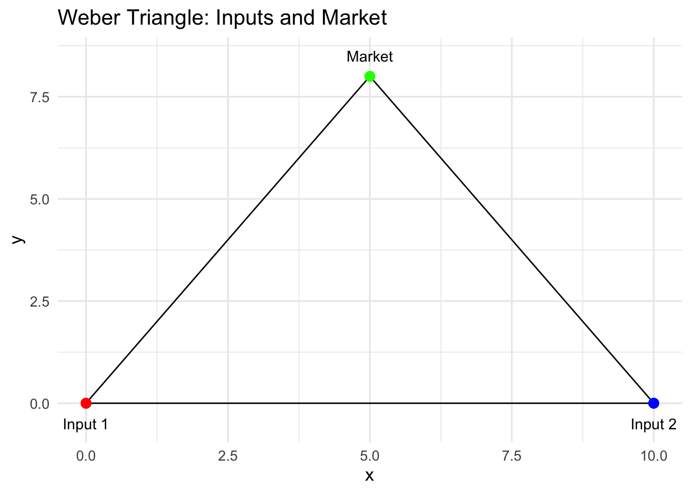
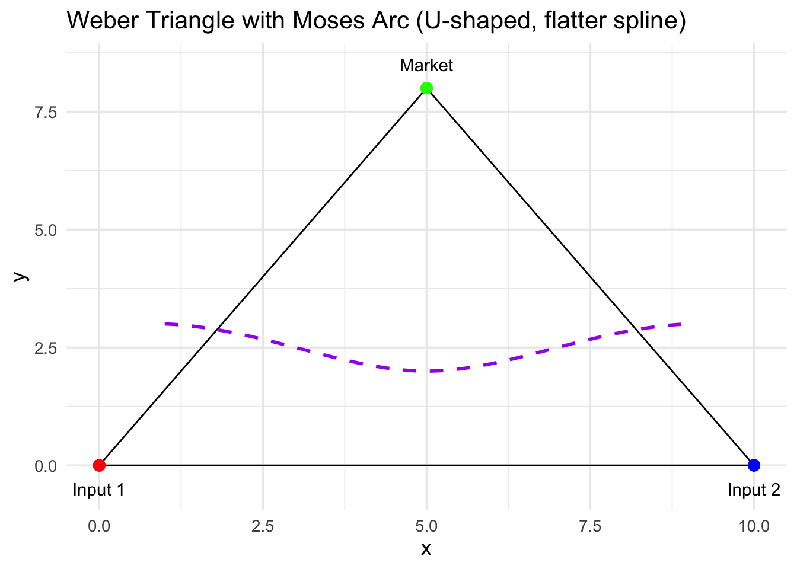
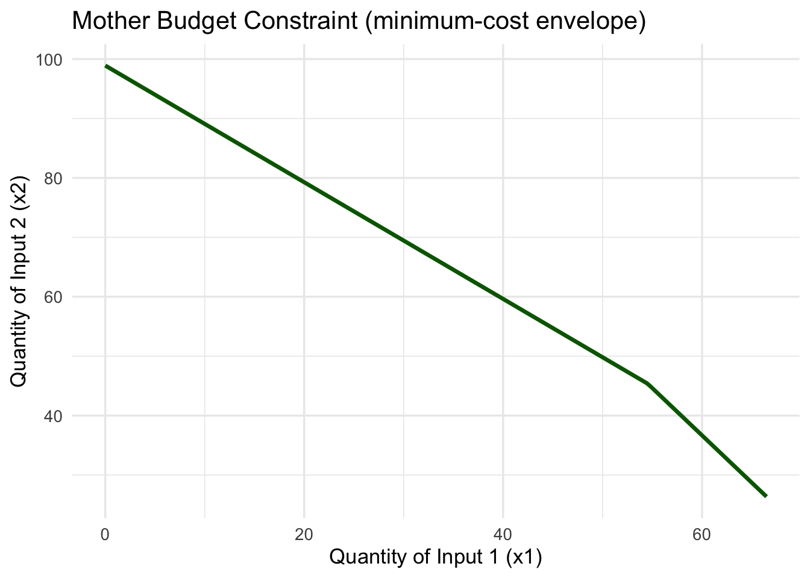
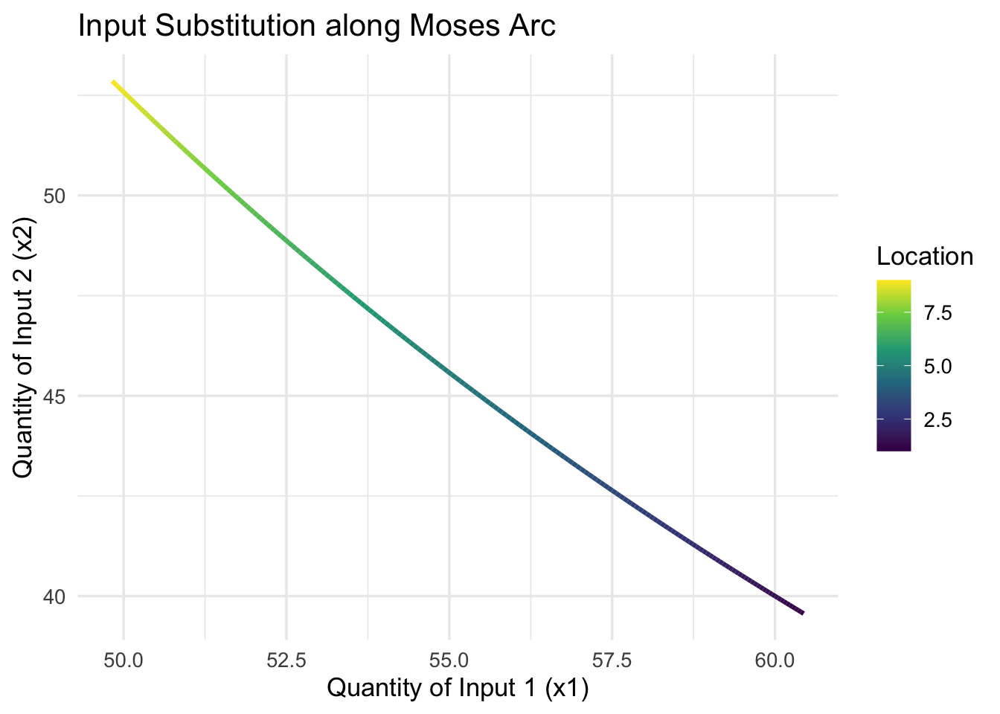
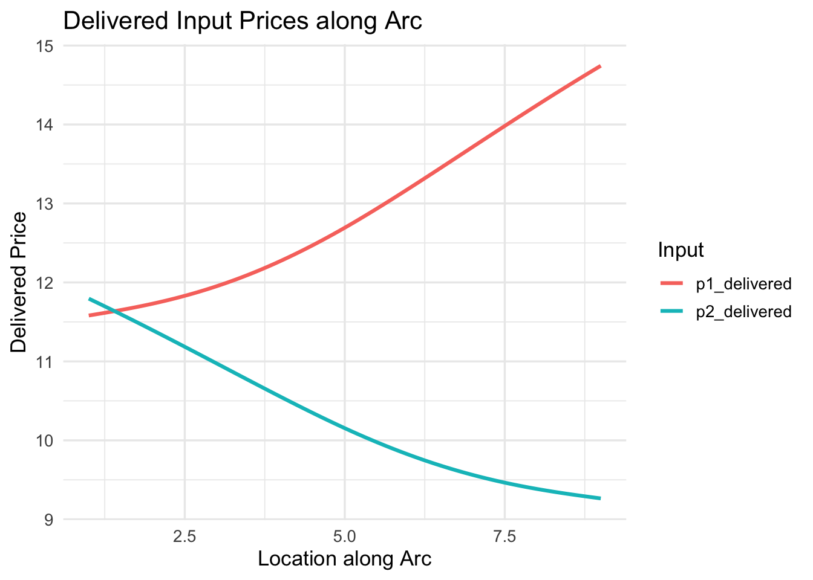
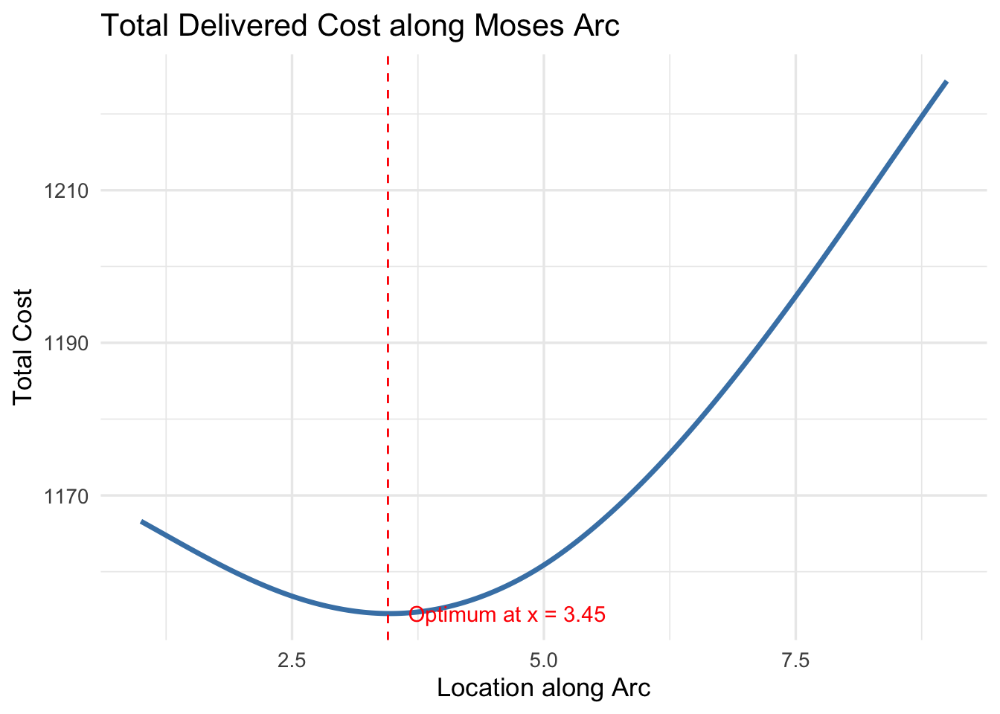
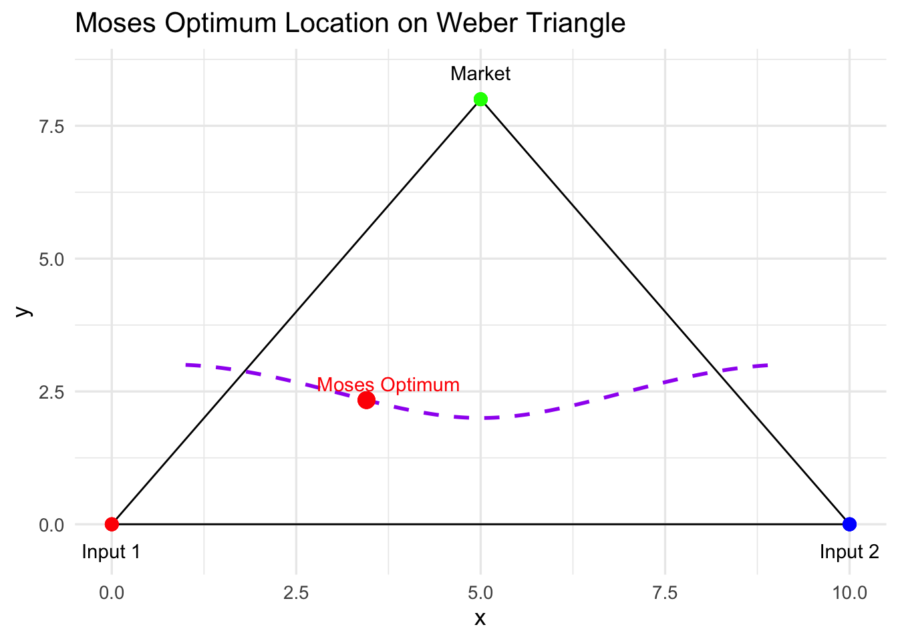

# Productivity parameter (A) – higher means more efficient production
A <- 1
# Output requirement (q̄) – assume firm must produce 100 units
q_target <- 100
# Input share parameter (β) – importance of input 1
beta <- 0.6
# Base prices for inputs (without transport)
p1_base <- 10 # base price of input 1
p2_base <- 8 # base price of input 2
# Transport cost per unit distance
t1 <- 0.5 # transport cost for input 1
t2 <- 0.4 # transport cost for input 2
# Let's imagine the firm can locate along a line between input 1 (at 0)
# and input 2 (at 10). Distance to input 1 = x, distance to input 2 = 10 - x.
location <- seq(0, 10, by = 0.1)
# Coordinates for Weber triangle (inputs + market)
input1_coord <- c(0,0)
input2_coord <- c(10,0)
market_coord <- c(5,8)Moses’ Follow-Up
Economic Geography
Economic Modelling
From Weber to Moses: When Firms Can Substitute Inputs
Weber’s (1909) model of industrial location imagines a firm that must decide where to locate between two input sources and a market. Inputs are used in fixed proportions, so the task is purely geometric: the firm’s only decision is where to locate to minimize transport costs.
The solution to this problem is illustrated using the Weber triangle, a shape describing the location of the firm’s inputs and its respective market place - but also a shape containing the optimum location for the firm to locate. That is, the place which balances the “pull” of the inputs and the market.
But by assuming that inputs are used in fixed proportions throughout the production process, Weber rules out any possibility for input substitution (i.e., use more of one input if it’s cheaper to transport and less of the other), something which we know happens quite a lot in the real world.
Moses’ Contribution
Harold Moses (1958) extended Weber’s framework by introducing factor substitutability. Now, input proportions are no longer fixed; instead, the firm chooses both its location and its input mix to minimize total cost.
If we imagine the Weber triangle again, Moses’ key insight can be visualised as an arc within the triangle:
Every point along this arc keeps the distance to the market roughly constant.
Moving along the arc changes the distance to the inputs, which influences the volume of each input that the firm will use. That is, each location gives a different trade-off between inputs.
Each location along the arc corresponds to a different mix of inputs.
Thus, the firm chooses where to locate and how much of each input to use to minimize total delivered cost. That is, The firm wants to find the best place to locate and the best combination of inputs that give the lowest possible total cost. This is thus a problem of location and cost-minimisation:
\[ (x^*,y^*,\{m_i^*\}) = \arg\min_{(x,y),\{m_i\}} TC(x,y,\{m_i\}) \] where the total cost is:
\[ TC(x,y,\{m_i\}) = Min \sum_{i=1}^{n} (x,y)m_i, t_i, d_i \]
Note
In the Weber model, the summation typically runs from \((t=1)\) to \((3)\) — representing two input sources and one market in the classic location triangle.
In the Moses model, this is often written more generally as \((i=1)\) to \((n)\), since the framework can handle any number of inputs or any number of destinations.
The change from \((t)\) to \((i)\) (and from \((3)\) to \((n)\)) in our \(𝚺\), therefore, does not change the logic — it simply generalises the setup. Thus, you can easily substitute \((3)\) for \((n)\) (and \((t)\) for \((i)\)) with no consequence to the interpretation.
In this setup, because the distance to the market at each location along the arc does not change, the only variable is the proprtion of each input.
In the Moses framework, each possible location along the arc can be represented by a budget constraint in input space. Think of it as showing how much of input 1 and input 2 a firm can afford given their delivered prices at that particular spot.
Because each location changes the delivered price of the inputs (somewhere you’re closer to one input, farther from another), the slope of each budget line differs. A location near input 1 will have cheaper access to it, making the budget line flatter — meaning the firm can afford more of input 1 for each unit of input 2. Conversely, a location closer to input 2 will tilt the budget line the other way.
If we were to draw all these individual budget constraints, one for each potential location, they would fan out across the input space. The outer envelope of these lines — the one that touches the highest possible isoquant (i.e., the production curve showing all possible combinations of inputs for a fixed level of output) — is what Moses called the mother budget constraint.
This “mother” constraint captures the best possible trade-offs across all locations. The point where the isoquant just touches this outer envelope gives us two things at once:
the optimal mix of inputs, and the corresponding optimal location
That’s the essence of the Moses optimum.
An Empirical Illustration
Let’s build a simple numerical example to see how this works.
We’ll consider two input sources and one market, just like in Weber, but now we’ll allow substitution between inputs using a Cobb–Douglas production function.
Important
To make Moses’ model concrete, we need a way to describe how a firm turns inputs into output.
In Weber’s setup, the firm uses inputs in fixed proportions — say, two units of input 1 for every one unit of input 2, no matter the cost or distance. This is like saying you can’t change your recipe even if one ingredient becomes expensive to transport.
Moses’ insight was to relax that assumption and allow substitution between inputs: if one becomes more expensive to deliver, the firm can use more of the other. To represent this flexibility, economists often use the Cobb–Douglas production function:
\[ Q = AK^⍺ L^{1-⍺} \] for two generic inputs. Here, \(A\) represents total factor productivity (essentially a scaling constant that captures how efficiently inputs are turned into output), \(K\) represents capital stocks, \(L\) represents labour supply, and \(⍺\) represents the relative share of each in the production process.
In our case, since we’re talking about input sources rather than factors of production, we can express it more intuitively as:
\[ q = Ax^𝛽_1 x^{1-𝛽}_2 \] where \(q\) represents output, \(x_1\) and \(x_2\) represent our inputs, and \(𝛽\) represents the cost share of each of our inputs.
This formulation has several attractive features:
Substitution between inputs: The firm can alter its mix of \(x_1\) and \(x_2\) when their delivered prices change — exactly what Weber’s fixed-input model ruled out.
Smooth and realistic trade-offs: The function assumes diminishing returns so that increasing one input raises output but at a decreasing rate.
Analytical convenience: It produces clean expressions for cost-minimising input choices.
On the latter point, when we minimise costs:
\[ C = p_1x_1 + p_2x_2 \]
subject to:
\[ q = Ax^𝛽_1 x^{1-𝛽}_2 \] the first-order conditions yield the classic cost-share rule:
\[ \frac{p_1x_1}{C} = 𝛽; \frac{p_2x_2}{C} = 1 - 𝛽 \]
First-order conditions are important because they identify the point where a firm’s objective — like minimising cost or maximising profit — is optimised.
In calculus terms, they show where the slope of the objective function equals zero, meaning no further improvement is possible from small changes in input choices.
In economic modelling (like Moses’), they give us the optimal combination of inputs or location that minimises total cost, given prices and technology.
This means the firm allocates a constant share of total cost to each input — but since delivered input prices (\(p_1\) and \(p_2\)) depend on location (via transport costs), the quantities \(x_1\) and \(x_2\) still vary spatially. Thus, in the context of the Moses model, this function allows us to jointly determine the optimal input mix given relative delivered prices and the optimal location that minimises total delivered cost.
The steps:
- Define parameters (i.e., distances and transport costs) and the Geographical Space
This step sets up the basic environment for the model. We define the firm’s productivity (\(A\)), output requirement (\(q_target\)), and input share (\(β\)). Base prices for inputs and transport costs are also specified. Finally, we define the physical coordinates for the inputs and market and create a vector of potential locations along the triangle. This establishes the spatial framework over which the Moses model will operate.
- Plot Weber Triangle
df_triangle <- data.frame(
x = c(input1_coord[1], input2_coord[1], market_coord[1], input1_coord[1]),
y = c(input1_coord[2], input2_coord[2], market_coord[2], input1_coord[2])
)
p_triangle <- ggplot(df_triangle, aes(x=x, y=y)) +
geom_polygon(fill=NA, colour="black") +
geom_point(aes(x=input1_coord[1], y=input1_coord[2]), colour="red", size=3) +
geom_point(aes(x=input2_coord[1], y=input2_coord[2]), colour="blue", size=3) +
geom_point(aes(x=market_coord[1], y=market_coord[2]), colour="green", size=3) +
annotate("text", x=c(input1_coord[1], input2_coord[1], market_coord[1]),
y=c(input1_coord[2]-0.5, input2_coord[2]-0.5, market_coord[2]+0.5),
label=c("Input 1","Input 2","Market")) +
labs(title="Weber Triangle: Inputs and Market") +
theme_minimal(base_size=13)
p_triangle
We visualise the classical Weber triangle, showing the locations of the two inputs and the market. This provides a geometric reference for understanding the firm’s trade-offs and for illustrating the Moses arc later.
- Overlay Moses Arc
# Define a few key points along the desired arc inside the triangle
# These are manually chosen to stay inside the triangle and roughly preserve market distance
arc_points <- data.frame(
x = c(1, 3, 5, 7, 9),
y = c(3, 2.5, 2, 2.5, 3) # middle is lower, ends slightly higher → U-shape
)
# Generate a smooth spline curve through these points
arc_spline <- as.data.frame(spline(arc_points$x, arc_points$y, n = 200))
# Rename columns
df_arc <- data.frame(x = arc_spline$x, y = arc_spline$y)
# Use spline x-values as the "location" along the arc
location <- df_arc$x
# Plot Weber triangle with updated U-shaped spline arc
p_arc <- p_triangle +
geom_path(data = df_arc, aes(x = x, y = y), colour="purple", size=1, linetype="dashed") +
labs(title="Weber Triangle with Moses Arc (U-shaped, flatter spline)")
p_arc
Here we add a curved, U-shaped spline inside the triangle to represent locations where the market distance is roughly constant. This visualisation highlights Moses’ key insight: the firm can move along this arc and trade off distances to inputs while keeping market distance more-or-less the same. This arc serves as the spatial backbone for all subsequent calculations.
- Compute delivered input prices for several possible locations (points along an arc).
# Compute distances from each point on the spline to the inputs
d1 <- sqrt((df_arc$x - input1_coord[1])^2 + (df_arc$y - input1_coord[2])^2)
d2 <- sqrt((df_arc$x - input2_coord[1])^2 + (df_arc$y - input2_coord[2])^2)
# Delivered prices now use actual distances
p1_delivered <- p1_base + t1 * d1
p2_delivered <- p2_base + t2 * d2At each location along the arc, the delivered price of each input is calculated as the base price plus the transport cost multiplied by distance. These prices capture the spatial cost differences that drive input substitution decisions.
- For each location, compute total cost using Cobb-Douglas.
# From the Cobb–Douglas cost-minimisation conditions:
# x1 = (β * q̄ / A) * ((p2 / p1) * ((1 - β)/β))^(1 - β)
# x2 = ((1 - β) * q̄ / A) * ((p1 / p2) * (β/(1 - β)))^β
# For simplicity, we’ll use the analytical cost-share rule instead:
# Cost shares: input 1 gets β of total cost, input 2 gets (1 - β).
# The unit cost function for Cobb–Douglas is:
# c = (p1^β * p2^(1 - β)) / A
unit_cost <- (p1_delivered^beta * p2_delivered^(1 - beta)) / A
# Total cost to produce q̄ units:
total_cost <- unit_cost * q_targetUsing a simplified Cobb–Douglas cost function, we calculate the total cost of producing the target output at each location along the arc. This incorporates the delivered input prices and input shares, connecting spatial location to total cost.
- Compute input mix at each location
# From Cobb–Douglas cost shares:
# p1*x1 = β*C and p2*x2 = (1 - β)*C
x1 <- (beta * total_cost) / p1_delivered
x2 <- ((1 - beta) * total_cost) / p2_delivered
# Combine into a tidy dataframe
df <- data.frame(location,
p1_delivered,
p2_delivered,
total_cost,
x1,
x2)We calculate the quantity of each input (\(x_1\), \(x_2\)) that minimizes total cost at each location along the arc, based on Cobb–Douglas cost shares. This shows how the firm adjusts its input mix depending on relative prices at different locations.
- Compute “mother” budget constraints
x1_grid <- seq(0, max(x1)*1.1, length.out=200)
budget_matrix <- sapply(1:length(location), function(i){
(total_cost[i] - p1_delivered[i]*x1_grid) / p2_delivered[i]
})
budget_matrix[budget_matrix < 0] <- NA
x2_mother <- apply(budget_matrix, 1, min, na.rm=TRUE)
df_mother <- data.frame(x1=x1_grid, x2=x2_mother)
p_mother <- ggplot(df_mother, aes(x=x1, y=x2)) +
geom_line(size=1.2, colour="darkgreen") +
labs(title="Mother Budget Constraint (minimum-cost envelope)",
x="Quantity of Input 1 (x1)",
y="Quantity of Input 2 (x2)") +
theme_minimal(base_size=13)
p_mother
For each location, we compute the location-specific budget line and then extract the minimum-cost envelope across all locations — the mother budget constraint. This illustrates the overall trade-off between inputs across the entire arc, capturing Moses’ insight into input substitution in spatial terms.
The mother budget constraint is downward sloping because if the firm uses more of input 1, it can use less of input 2 to produce the same output at minimum cost, given their relative delivered prices.
- Visualise input substitution across arc
p_mix <- ggplot(df, aes(x=x1, y=x2, colour=location)) +
geom_path(size=1.1) +
scale_colour_viridis_c() +
labs(title="Input Substitution along Moses Arc",
x="Quantity of Input 1 (x1)",
y="Quantity of Input 2 (x2)",
colour="Location") +
theme_minimal(base_size=13)
p_mix
Here, we plot \(x_1\) versus \(x_2\) along the arc to show how the input mix changes with location. This makes the substitution logic tangible, showing students how moving along the arc affects the combination of inputs used.
As the firm moves along the Moses arc, relative input prices change due to transport costs. The downward slope of \(x_2\) vs \(x_1\) along the arc shows that as the firm uses more of input 1 (closer to input 1), it uses less of input 2 (farther from input 2).
- Visualise delivered input prices along the arc
df_prices <- df %>%
select(location, p1_delivered, p2_delivered) %>%
pivot_longer(-location, names_to="Input", values_to="Price")
p_prices <- ggplot(df_prices, aes(x=location, y=Price, colour=Input)) +
geom_line(size=1.1) +
labs(title="Delivered Input Prices along Arc",
x="Location along Arc",
y="Delivered Price") +
theme_minimal(base_size=13)
p_prices
This plot shows how delivered prices for each input vary with location along the arc. It helps explain why the firm substitutes inputs, connecting spatial distance, delivered prices, and input choice.
Each point on the x-axis corresponds to a specific location along the Moses arc. The lines for input 1 and input 2 show how their delivered prices vary with location: Input 1 price is lower closer to input 1 (left side of the arc). Input 2 price is lower closer to input 2 (right side of the arc).
- Identify the location with the lowest total cost — the Moses optimum.
min_index <- which.min(total_cost)
optimal_location <- location[min_index]
p_cost <- ggplot(df, aes(x=location, y=total_cost)) +
geom_line(size=1.2, colour="steelblue") +
geom_vline(xintercept=optimal_location, linetype="dashed", colour="red") +
annotate("text", x=optimal_location + 0.2, y=min(df$total_cost),
label=paste0("Optimum at x = ", round(optimal_location,2)),
colour="red", hjust=0) +
labs(title="Total Delivered Cost along Moses Arc",
x="Location along Arc",
y="Total Cost") +
theme_minimal(base_size=13)
p_cost
Finally, we find the location along the arc that minimises total cost. This is the Moses optimum, the point where the firm chooses both location and input mix to achieve the lowest possible cost. The corresponding plot highlights this location, completing the workflow and linking all the spatial and economic considerations together.
So, where is the Moses optimum for this particular problem?
# Coordinates of Moses optimum
x_opt <- optimal_location
y_opt <- approx(df_arc$x, df_arc$y, xout=x_opt)$y
# Plot Weber triangle + Moses arc + optimum
p_optimum <- p_triangle +
geom_path(data = df_arc, aes(x = x, y = y), colour="purple", size=1, linetype="dashed") +
geom_point(aes(x=x_opt, y=y_opt), colour="red", size=4) +
annotate("text", x = x_opt + 0.3, y = y_opt + 0.3,
label = "Moses Optimum", colour="red") +
labs(title="Moses Optimum Location on Weber Triangle") +
theme_minimal(base_size=13)
p_optimum
It appears that the optimal location for this firm, all things considered, is closer to input 1 than everywhere else and we can thus conclude that the optimum mix of inputs is also favourable toward input 1, providing a solution to our location and cost minimisation problem.
To Conclude
Weber’s original model gives us a neat geometric framework: the firm sits somewhere inside the Weber triangle, balancing the “pull” of its two inputs and the market. But by assuming fixed input proportions, it misses a crucial feature of real-world production — the ability to substitute between inputs depending on relative costs and transport distances.
Moses’ insight was to relax that rigidity. By allowing input proportions to vary, the firm no longer chooses a single point based solely on geometric balance. Instead, it navigates a continuum of possible locations and input mixes, seeking the combination that minimizes total delivered cost. Conceptually, this turns the problem from a static location puzzle into a dynamic trade-off between space and input choice.
The result is richer and more realistic: firms are not locked to a single optimum but can adjust both their inputs and location in response to costs. The Moses framework shows that optimal location is not just where distances balance, but where the interaction between spatial proximity and input flexibility produces the lowest total cost. In this sense, Moses extends Weber, providing a more nuanced understanding of industrial location that highlights the strategic adaptability of firms in space.
Bibliography
- McCann, Philip. 2013. Modern Urban and Regional Economics
- Pike, Andy; Rodríguez-Pose, Andres; Tomaney, John. 2016. Local and Regional Development.